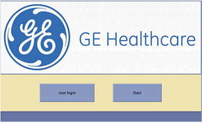

- 00000018WIA3034ECB0GYZ
- id_20644281.7
- Jul 28, 2025 5:44:36 PM
Reloading software version 30.2 and later (eDelivery partition)
Reload the host system software for software version 30.2 and later (eDelivery partition).
| Loading software | |
|---|---|
| Step | Procedure for USB load only |
|
Prerequisites |
|
|
Note Refer to the MR Service Pack Software Matrix (DOC1667089), available from the online documentation library, and make sure the necessary service pack media (if any) is available. Do not start the software load until this media is available.
| |
|
Required media |
|
|
Perform SaveInfo (Check Information instead if using an older SaveInfo media) | Saving information. Note The eDelivery partition contains a SaveInfo from the Remote Software Download software upgrade. A new SaveInfo can be used, if necessary. |
|
Load USB host system software |
Reloading host system software from the eDelivery partition Note If a RestoreInfo media with all the required files is available, then Host OS load, Applications Software Load, ICN Configuration, and SSA licenses, including restore of connectivity settings, are all automatically executed sequentially.
Note Beginning with software release 29.1 software restoring information will automatically set the PNF Filter setting to ON regardless of previous setting. Make sure you reset the PNF filter to previous setting after consulting with the customer.
In case any failures are observed, after the completion of applications software load, a dialog box appears showing all remaining tasks that need to be completed. To complete these tasks manually, see the procedures in this table. If any failures occur prior to the applications software load completion, restart the software load process. For a list of errors and possible actions during the software load process, see Troubleshooting the software load. |
|
Configure ICN (VRE) OS |
This task is automated for software reinstallations and upgrades if the RestoreInfo action is successful. In case of any failure, this can be attempted manually. See Configuring the SIP, ICN, or VRE. |
|
Install IRM |
This task is automated for software reinstallations and upgrades if the RestoreInfo action is successful. In case of any failure, this can be attempted manually. See Installing IRM software. |
|
Loading proprietary software |
This task is automated. In case of any failure, this can be attempted manually. |
|
RSvP registration |
This task is automated for software reinstallations and upgrades if the RestoreInfo action is successful. Register device with RSvP to establish remote connectivity. See Configuring the Remote Service Platform (RSvP) for software 29.0 and later. See Enabling the Remote Service Platform (RSvP) iLinq to enable iLinq. |
|
Install SSA |
This task is automated for software reinstallations and upgrades if the RestoreInfo action is successful. The SSA license is restored during the RestoreInfo process. This step is not necessary for reinstallation unless the service license ID has been modified. If the service license ID has been modified, or if this is a new install, record the service license ID and contact OLE to generate a new license for the site. See Managing SSA service licenses for information on how to record the service license ID. See Loading service license softkey to load the license. |
|
Install options/option keys |
For the purchasable option keys, see Option key catalog matrix. Note Signa Secure Advanced option: If the customer purchased this license, configure the security setting in Guided Install to Signa Secure Advanced. The system must be restarted to enable the highest security configuration in Guided Install.
|
|
Install operator manual | |
|
Install latest service pack (if required) |
See Loading software updates from the repository or CD/DVD or Remote software download. (For the software version 30 and later) See Loading service pack from USB installer or Remote software download. Note Refer to the MR Service Pack Software Matrix (DOC1667089), available from the online documentation library, and make sure the necessary service pack media (if any) is available. Do not start the software load until this media is available.
|
|
Close Guided Install from File → Quit option and then reboot the system |
|
|
Set up customer accounts and passwords (OS & EA3) | |
|
Log on to Applications |
Click Start to log on to applications.
 |
|
System Calibration |
If not completed during previous steps, run the About MR Scanner tool. See Running the About MR Scanner tool. |
|
Do a check of the cyber security compliance | |
| Reconfigure Imaging Protocol Manager (IPM) | If required, do Imaging Protocol Manager (IPM) procedures for Load from Cold (LFC) or software upgrade. |
|
Do a check scan |
Note The first boot after a software upgrade will take a long time due to extended TPS Reset.
|
|
Do the Safety Calibration Checks | |